PROJECT OVERVIEW
Our Event Ticketing System lets users explore events, compare prices, and book easily. Business owners can browse venues and send quotations but no need to host events. It connects users and venue providers for a faster, easier, and more affordable event experience.
COLOR PALETTE
Primary Color (#080739): A dark navy blue was selected as the primary color because it represents trust, security, and professionalism, helping users feel confident when using the system and purchasing tickets. Secondary Color (#103263): A bright blue was chosen as the secondary color to support the primary color, highlight interactive elements, and create a clear visual hierarchy throughout the interface. Text Colors (#030812 and #FAFAFA): Dark and white text colors were selected to provide strong contrast, improve readability, and ensure clear visibility of content across different backgrounds. Error Color (#FF4D4D): Red was used for error messages and warnings because it immediately attracts users' attention and helps them identify issues quickly. Neutral Gray Colors (#D9D9D9, #898989, #C0C0C0): Gray tones were used for placeholders, secondary text, borders, and disabled elements to maintain a clear visual hierarchy and consistent user experience.
Typography
Figtree was chosen for the Event Ticket System because it provides a clean and modern appearance while maintaining high readability. It helps users easily read event information and ticket details, creating a professional and consistent user interface throughout the system.
Grid System

Final Design
Home Page
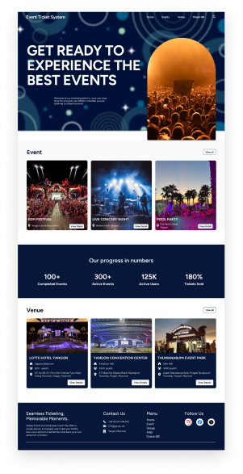
Trending Event
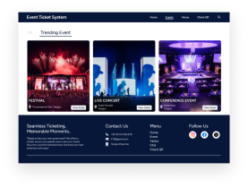
Event User Info
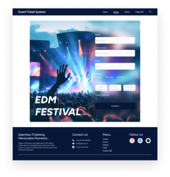
Event Detail
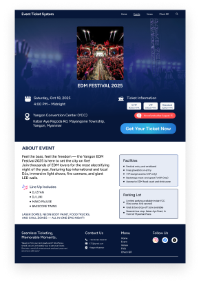
Venue List
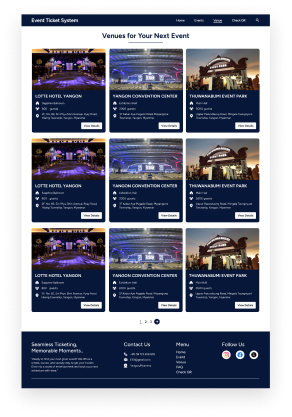
Venue Detail
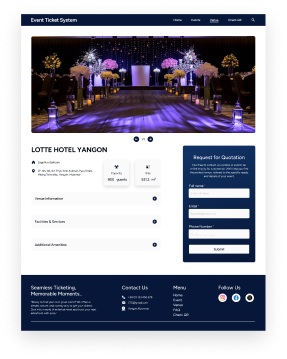
OTP (Overlay)
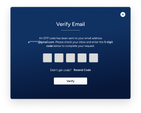
Success Message
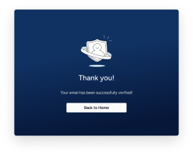
Upload QR
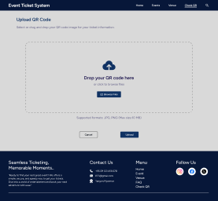
Uploading
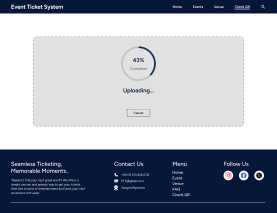
Upload Complete
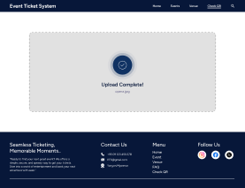
Ticket Information
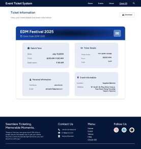
FAQ
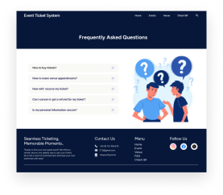
User Persona
Name: James
Age: 32
Occupation: Marketing Manager
Devices: Mostly on laptop
Environment: His Office
James is a busy professional who juggles a demanding job with a packed social life. He's ambitious and organized, often using digital tools to manage his schedule and tasks. He enjoys attending live events concerts, comedy shows, and sporting events — as a way to de-stress and connect with his friends and partner. James is married and has two young children. He lives in a suburban area, balancing his professional life with family responsibilities.
Frustration
Time-Consuming Ticket Searches: He has to navigate multiple websites to find tickets, compare prices, and check for availability. He gets frustrated when he has to manually search for events that fit his schedule.
Complex Checkout Processes: Long, multi-step checkout forms that require him to re-enter the same information are a major turn-off. He also gets annoyed by websites that crash or time out while he's in the middle of a purchase.
Hidden Fees: The final ticket price is often much higher than the initial one due to "convenience fees," "service fees," and other charges that are only revealed at the very end of the process.
Personality Traits
James is a busy professional who juggles a demanding job with a packed social life. He's ambitious and organized, often using digital tools to manage his schedule and tasks. He enjoys attending live events—concerts, comedy shows, and sporting events—as a way to de-stress and connect with his friends and partner. However, he's also easily frustrated by inefficient processes. He appreciates well-designed, intuitive interfaces that save him time and effort. He's not a fan of complicated websites with too many steps, pop-ups, or hidden fees.
Goals
- Quickly and easily find event tickets that fit into his limited free time.
- Securely and seamlessly purchase tickets without any hassle.
- Receive all the necessary information (e.g., ticket QR codes, event details) in a clear and accessible format.
- Be able to buy tickets for himself and his partner or friends in a single transaction.
- Get notifications about his favorite artists or events so he doesn't miss out.
Quote
"I love going to concerts, but by the time I have a free night, all the good tickets are gone. I
need a way to see what's happening that fits into my crazy schedule.
I follow a few
artists, but I never see when they're touring near me until a friend posts about it. I wish I
had a personal assistant to keep me in the loop."
Site Map
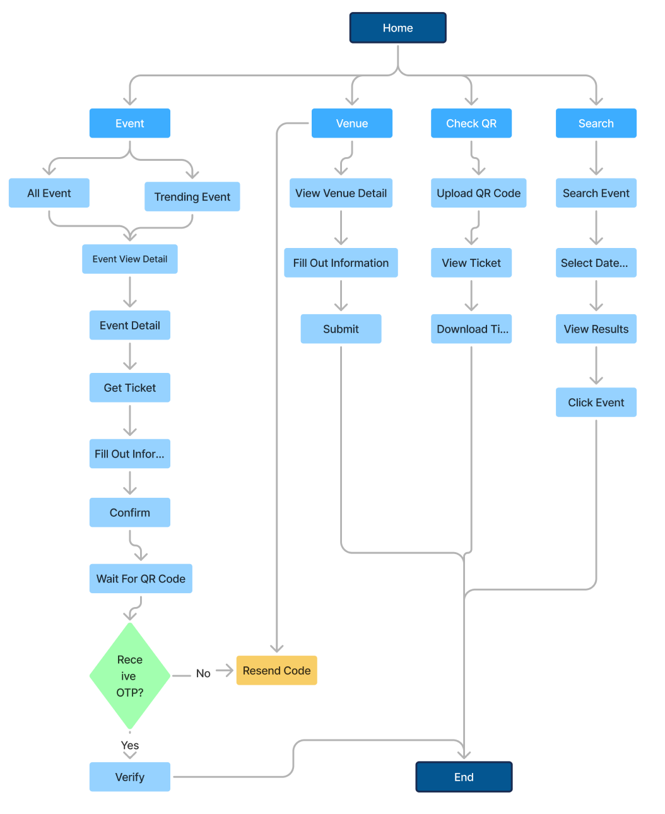
User Flow
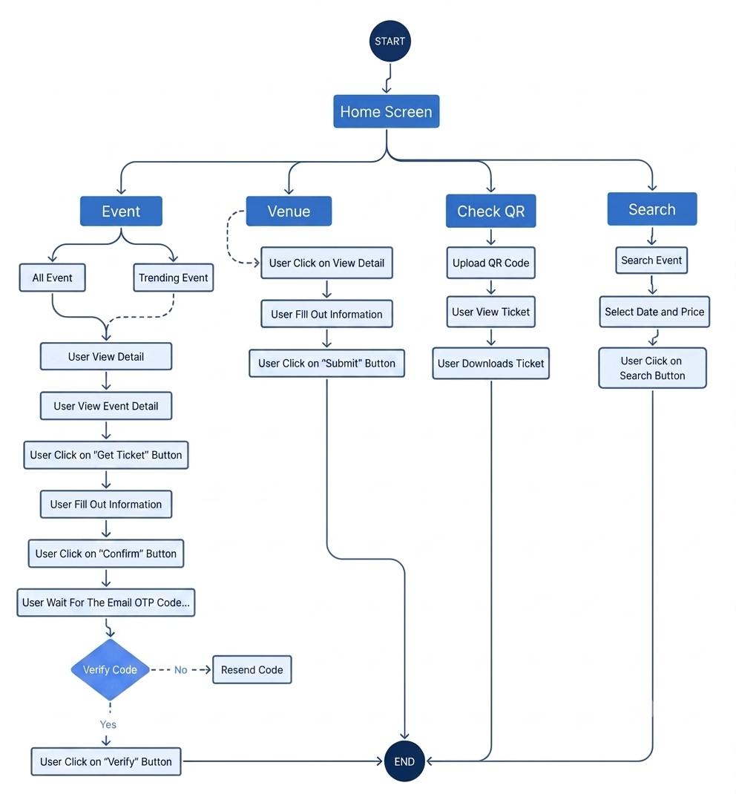
Key Learning
- Learned how structured information architecture improves navigation in complex ticketing systems.
- Discovered the importance of reducing friction during ticket booking and verification processes.
- Improved my ability to design user-centered search and event discovery experiences.
- Gained experience mapping end-to-end user journeys and identifying usability issues before development.